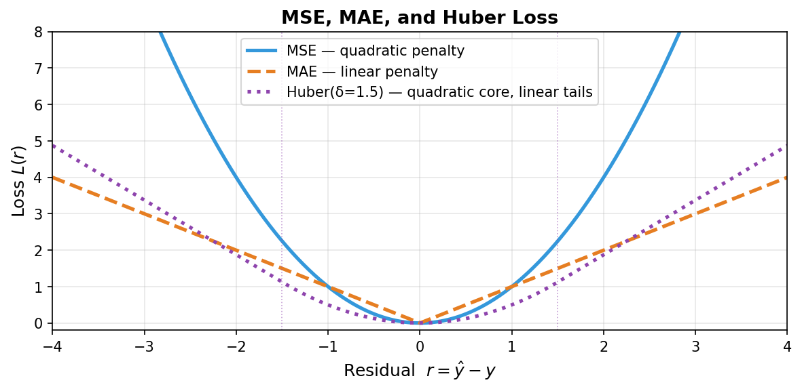
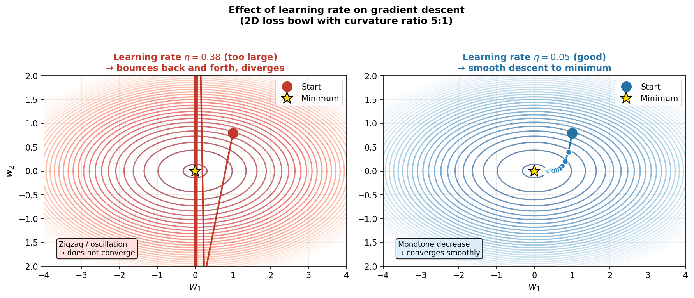
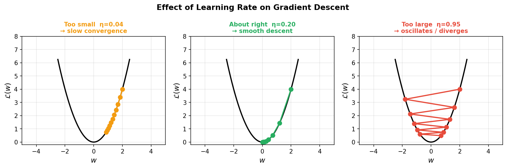
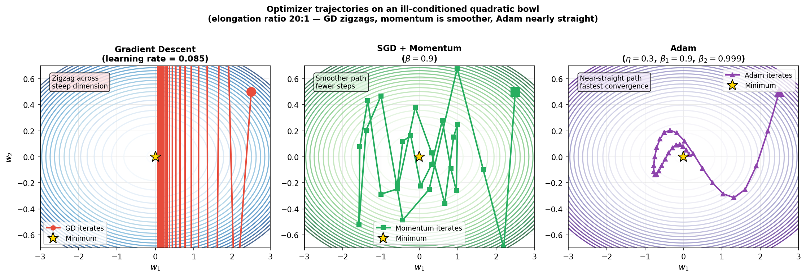
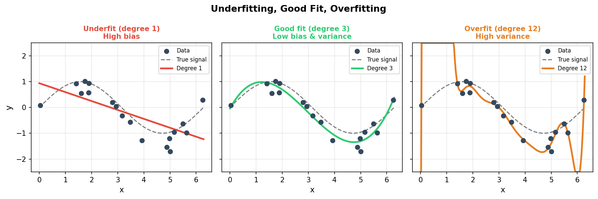
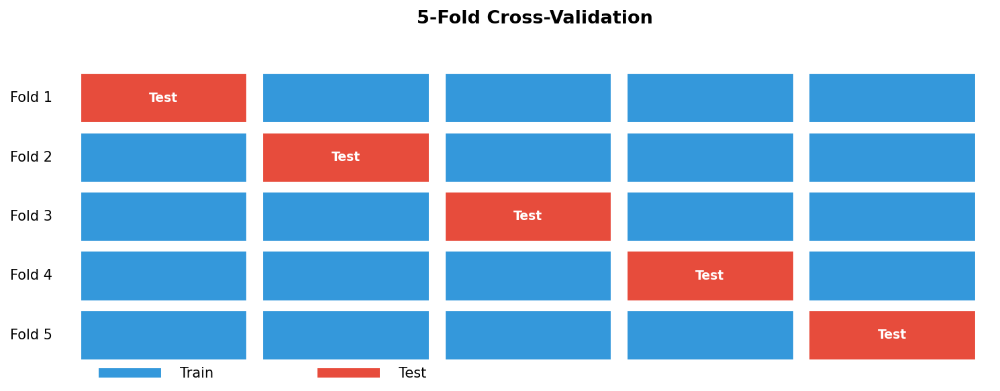
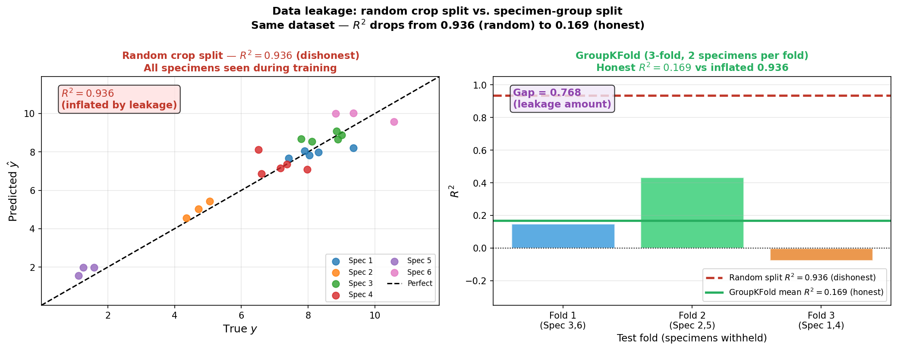
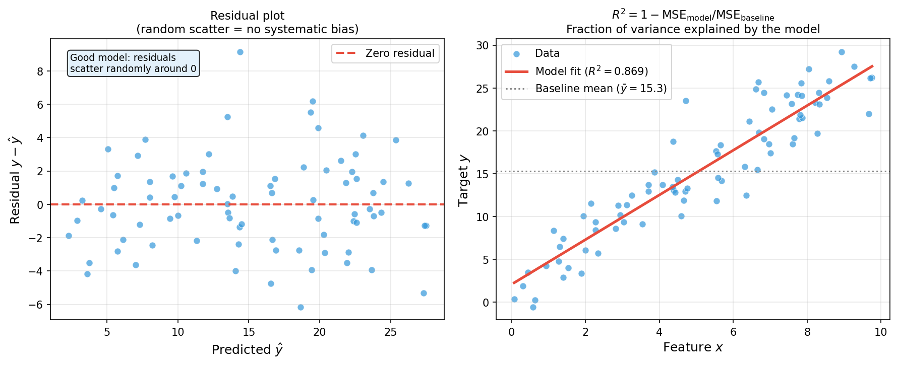
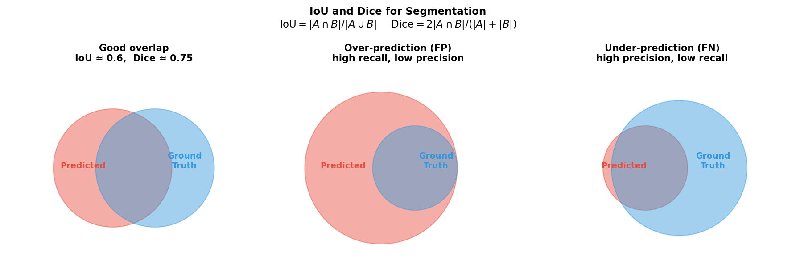

Data Science for Electron Microscopy
Week 4: Regression, gradient descent & honest validation
FAU Erlangen-Nürnberg
Institute of Micro- and Nanostructure Research


Recap: where we left off
- Week 3: linear algebra & PCA — SVD, score maps, eigenspectra.
- You can now compress a 50 000-spectrum EELS dataset into a handful of components and plot a scree plot.
- Key geometric insight: least-squares = projection of the target vector onto the column space of \(\mathbf{X}\).
- Gap: projection gives the optimal weights analytically, but only when we can invert \(\mathbf{X}^T\mathbf{X}\). For large or non-linear problems we need an iterative approach — gradient descent.
- Gap #2: fitting a model well on training data is not the same as fitting it honestly. We will spend the second half of today on that distinction.
Today’s questions
- Why does a model trained on EM crops from one specimen fail on crops from a new specimen? Because crops from the same specimen are correlated — training on them while testing on others measures memorisation, not generalisation.
- How do we find model parameters without inverting a matrix? Gradient descent: follow the slope of the loss surface downhill, one small step at a time.
- Road map: prediction = loss minimisation (3) · MSE / MAE / Huber & noise (5) · loss landscape & GD picture (4) · learning rate (3) · SGD → Adam, intuition only (6) · overfitting & bias–variance (4) · train/val/test (4) · K-fold CV (3) · data leakage in EM — the crop-vs-specimen trap (6) · regression & segmentation metrics (4) · limits + Week 5 preview (2).
- Self-study:
notebooks/week04_leakage_demo.ipynb— fit a regressor two ways and watch the honest score drop.
Prediction = minimising a loss
- Dataset: \(\mathcal{D} = \{(\mathbf{x}_i, y_i)\}_{i=1}^N\) — each \(\mathbf{x}_i\) is a feature vector, \(y_i\) is the target.
- Predictor: \(\hat{y}_i = f_{\mathbf{w}}(\mathbf{x}_i)\) — parameterised by weights \(\mathbf{w}\).
- Loss: \(L(\hat{y}_i, y_i)\) — a scalar that scores how wrong prediction \(i\) is.
- Empirical risk (what we minimise): \(\hat{R}(\mathbf{w}) = \dfrac{1}{N}\sum_{i=1}^{N} L(f_{\mathbf{w}}(\mathbf{x}_i),\, y_i)\).
- Goal: \(\hat{\mathbf{w}} = \arg\min_{\mathbf{w}} \hat{R}(\mathbf{w})\).
Every supervised learning algorithm is a choice of loss + a choice of optimiser.
The linear model & the normal equations
- Linear predictor: \(\hat{y} = \mathbf{w}^T \mathbf{x} + b = \mathbf{w}^T \mathbf{x}\) (absorb \(b\) into \(\mathbf{w}\)).
- MSE loss for linear regression: \(\hat{R}(\mathbf{w}) = \tfrac{1}{N}\|\mathbf{X}\mathbf{w} - \mathbf{y}\|^2\).
- Analytic solution (Normal equations): \(\hat{\mathbf{w}} = (\mathbf{X}^T\mathbf{X})^{-1}\mathbf{X}^T\mathbf{y}\).
- Geometric reading (Week 3): \(\hat{\mathbf{y}} = \mathbf{X}\hat{\mathbf{w}}\) is the projection of \(\mathbf{y}\) onto the column space of \(\mathbf{X}\).
- Problem: inverting \(\mathbf{X}^T\mathbf{X}\) fails when \(D\) is large or features are correlated (\(\kappa(\mathbf{X}^T\mathbf{X}) \gg 1\)).
Enter gradient descent — an iterative alternative that never inverts anything.
What is the gradient?
- The gradient \(\nabla_\mathbf{w} \hat{R}(\mathbf{w})\) is a vector pointing in the direction of steepest ascent of the loss surface.
- Key insight: moving opposite to the gradient (steepest descent) reduces the loss (at least locally).
- First-order Taylor: \(\hat{R}(\mathbf{w} - \eta \nabla \hat{R}) \approx \hat{R}(\mathbf{w}) - \eta \|\nabla \hat{R}\|^2 < \hat{R}(\mathbf{w})\) for small \(\eta > 0\).
- For MSE linear regression: \(\nabla_\mathbf{w} \hat{R} = \tfrac{2}{N}\mathbf{X}^T(\mathbf{X}\mathbf{w} - \mathbf{y})\) — a matrix-vector product, no inversion needed.
Gradient descent: take the gradient, step opposite to it, repeat.
Gradient descent — the update rule
- Update rule: \(\mathbf{w}_{t+1} = \mathbf{w}_t - \eta\,\nabla_\mathbf{w}\hat{R}(\mathbf{w}_t)\).
- Initialisation: start at some \(\mathbf{w}_0\) (typically small random values or zeros).
- Repeat until the loss stops decreasing (convergence criterion) or a budget is exhausted.
- For MSE linear regression: closed form for the gradient — \(\nabla_\mathbf{w}\hat{R} = \tfrac{2}{N}\mathbf{X}^T(\mathbf{Xw} - \mathbf{y})\).
- For any differentiable model: backpropagation (Week 5) computes the gradient automatically.
- The key insight: we only ever need first-order information (the gradient). No matrix inverses, no second-order terms.
MSE — the default regression loss
- \(L_{\text{MSE}}(\hat{y}, y) = (\hat{y} - y)^2\) — penalises errors quadratically.
- Smooth, convex bowl landscape — gradient descent’s ideal setting.
- Probabilistic identity: minimising MSE over the dataset = maximum-likelihood estimation (MLE) assuming iid Gaussian residuals \(\varepsilon \sim \mathcal{N}(0, \sigma^2)\) Bishop, Christopher M., (2006).
- In EM: correct when your noise is additive Gaussian (readout noise, Johnson noise). For Poisson-dominated low-dose data, use Poisson NLL instead (Week 2 recap).
MSE punishes large residuals heavily — one bad crop can dominate the loss.
MAE and Huber — robust alternatives

- MAE: \(L = |\hat{y} - y|\) — linear penalty, robust to outliers. Probabilistic identity: MLE under Laplacian residuals. Caveat: non-differentiable at zero → sub-gradient methods needed.
- Huber: quadratic inside \(|r| \le \delta\), linear outside. Best of both: smooth optimisation where residuals are small, robust to spikes. Standard tool when most EM crops are clean but occasional detector artefacts occur.
- Rule of thumb: start with MSE; switch to Huber if residual plots show heavy tails.
The loss landscape — a bowl in weight space

- Loss landscape: the surface \(\hat{R}(\mathbf{w})\) over all possible weight vectors \(\mathbf{w}\).
- For MSE linear regression: a convex bowl — one global minimum, no local traps.
- Gradient descent update: \(\mathbf{w}_{t+1} = \mathbf{w}_t - \eta\,\nabla_\mathbf{w}\hat{R}(\mathbf{w}_t)\).
- \(\eta\) = learning rate — the step size along the negative gradient.
- The contour lines are level sets of the loss; GD crosses them at right angles (steepest descent).
Why the loss landscape shape matters
- Convex (MSE, Ridge): one bowl, one minimum — GD will find it.
- Non-convex (any neural network): many local minima, saddle points, plateaus.
- For non-convex losses, GD finds a minimum, not necessarily the best one.
- Practical message for EM: linear models trained with MSE are convex → any GD run converges to the same answer. Neural networks (Week 5) require careful initialisation and momentum to avoid bad local minima.
- Saddle points (equal numbers of upward and downward curvatures): gradient is zero but no minimum — GD stalls unless there is noise (SGD rescues this, next section).
Learning rate — too small, just right, too large

- Too small (\(\eta \ll 1/L\), \(L\) = Lipschitz constant of gradient): correct direction but tiny steps → converges in theory, but takes too long in practice.
- About right: loss decreases monotonically; convergence in tens to hundreds of steps.
- Too large (\(\eta > 2/L\)): overshoots the minimum repeatedly → oscillates or diverges.
- Rule of thumb: start at \(\eta = 0.01\)–\(0.1\), monitor the loss curve, reduce if it bounces.
Learning rate schedules
- Constant: \(\eta_t = \eta_0\) — simplest, works if \(\eta_0\) is well chosen.
- Exponential decay: \(\eta_t = \eta_0\,e^{-\lambda t}\) — fast early, conservative late.
- Step decay: \(\eta_t = \eta_0 \cdot \gamma^{\lfloor t/s \rfloor}\) — halve every \(s\) epochs.
- Reduce on plateau: halve \(\eta\) when the loss has not improved for \(k\) epochs. Default in many EM projects.
- Why decay helps: large \(\eta\) early → explore; small \(\eta\) late → fine-tune near the minimum.
When can GD get stuck?
- Local minima — non-convex losses (all neural networks) have multiple dips. GD finds a minimum, not necessarily the best one.
- Saddle points — gradient is zero but no minimum exists; GD stalls exactly there.
- Plateaus — gradient is near zero over a wide region; GD crawls.
- Vanishing gradients — for deep networks, gradients can shrink exponentially with depth (Week 5 details). The update becomes negligible far from the output.
- Good news: for problems with wide flat minima (most modern over-parameterised networks), many local minima have similar loss values. SGD’s noise helps escape narrow sharp minima and saddle points naturally.
Stochastic gradient descent (SGD)
- Full GD cost: \(\nabla\hat{R} = \tfrac{1}{N}\sum_i \nabla L_i\) — \(\mathcal{O}(N)\) per step. Expensive for \(N \sim 10^6\).
- SGD: pick one sample \(i\) at random; use \(\nabla L_i(\mathbf{w})\) as the gradient estimate.
- Key property: \(\mathbb{E}_i[\nabla L_i] = \nabla\hat{R}\) — unbiased estimate of the true gradient.
- Cost: \(\mathcal{O}(1)\) per step — dramatic speedup.
- Behaviour: noisy steps, but rapid early progress; bounces near the minimum.
- SGD’s noise helps escape saddle points — a genuine advantage over full GD on non-convex surfaces.
Minibatch SGD — the practical default
- Minibatch of size \(b\): average the gradient over \(b\) randomly selected samples. \[\mathbf{w}_{t+1} = \mathbf{w}_t - \frac{\eta}{b}\sum_{i \in \mathcal{B}_t}\nabla L_i(\mathbf{w}_t)\]
- Why \(b\) matters:
- Variance reduction: \(\text{Var}(\text{gradient estimate}) \propto 1/b\) — larger \(b\) = smoother steps.
- Vectorisation: modern GPUs process \(b\) samples in parallel almost for free (\(b = 32\)–\(256\)).
- Typical \(b\): 32, 64, 128 — hardware-aligned powers of 2.
- This is the default training loop for every neural network you will use from Week 5 onwards.
Momentum — the physics intuition
- Problem: SGD on an elongated bowl zigzags across the steep dimension while crawling along the flat one.
- Momentum idea: accumulate a “velocity” vector that persists across steps — like a ball rolling downhill: \[\mathbf{v}_t = \beta\,\mathbf{v}_{t-1} + \nabla L(\mathbf{w}_{t-1}), \qquad \mathbf{w}_t = \mathbf{w}_{t-1} - \eta\,\mathbf{v}_t\]
- \(\beta \approx 0.9\): 90% of previous velocity is preserved. Consistent gradient directions accumulate; oscillating directions cancel.
- Effect: smoother, faster convergence on ill-conditioned landscapes.
1
Adam — the go-to optimiser

- Adam: tracks both the gradient (momentum term \(\hat{\mathbf{v}}_t\)) and the squared gradient (adaptive scaling \(\hat{\mathbf{s}}_t\)): \[\mathbf{w}_t \leftarrow \mathbf{w}_{t-1} - \frac{\eta\,\hat{\mathbf{v}}_t}{\sqrt{\hat{\mathbf{s}}_t} + \epsilon}\]
- Adaptive scaling: each parameter gets its own effective learning rate — large for slowly-updated parameters, small for fast ones.
- Typical hyperparameters: \(\eta = 0.001\), \(\beta_1 = 0.9\) (momentum), \(\beta_2 = 0.999\) (RMS), \(\epsilon = 10^{-8}\).
- For most EM projects: use Adam at its default settings unless you have a specific reason to change them.
Optimiser comparison — a visual summary
| Optimiser | Per-step cost | Adaptive \(\eta\)? | Momentum? | Typical use |
|---|---|---|---|---|
| Full GD | \(\mathcal{O}(N)\) | No | No | Tiny datasets, convex |
| SGD | \(\mathcal{O}(1)\) | No | No | Rarely used bare |
| Minibatch SGD | \(\mathcal{O}(b)\) | No | Optional | Many DL papers |
| SGD + Momentum | \(\mathcal{O}(b)\) | No | Yes (\(\beta \approx 0.9\)) | Fine-tuned vision models |
| Adam | \(\mathcal{O}(b)\) | Per-param | Yes | Default for most EM projects |
- Rule: start with Adam at its defaults. Switch to SGD+momentum only if you have a specific reason (e.g. matching a published training recipe, or if Adam converges to a sharp minimum that generalises poorly).
- Not covered here: AdaGrad, RMSProp, AdamW, Nesterov — all first-order, all variations on the same theme.
Overfitting and underfitting

- Underfit (high bias): model too simple — cannot capture the pattern. Training and test errors are both high.
- Good fit (balanced): training error ≈ test error; the model captures the signal, not the noise.
- Overfit (high variance): model too flexible — memorises training noise. Training error ≈ 0, test error ≫ 0.
- In EM: a degree-12 polynomial fitted to 18 noisy data points passes through every point but predicts wildly on new samples.
Bias–variance decomposition
- For squared-error loss, the expected test error decomposes as Bishop, Christopher M., (2006): \[\mathbb{E}\bigl[(\hat{y} - y)^2\bigr] = \underbrace{(\mathbb{E}\hat{y} - y)^2}_{\text{Bias}^2} + \underbrace{\text{Var}(\hat{y})}_{\text{Variance}} + \underbrace{\sigma^2}_{\text{Noise floor}}\]
- Bias: systematic error — how far the average prediction is from the truth (underfitting).
- Variance: sensitivity to the training set — how much the prediction changes across different training sets (overfitting).
- Noise \(\sigma^2\): irreducible — set by the physics and detector (recall Week 2: shot noise, readout noise).
| Regime | Bias | Variance | Cure |
|---|---|---|---|
| Underfit | High | Low | More flexible model / features |
| Good fit | Low | Low | — |
| Overfit | Low | High | More data, fewer parameters, regularisation |
The training error vs test error diagnostic
- Diagnostic rule: | Pattern | Diagnosis | Action | |———|———–|——–| | High train error + high test error | Underfit (high bias) | More capacity or features | | Low train error + low test error | Good fit | Deploy | | Low train error + high test error | Overfit (high variance) | More data, regularise, or simplify | | Very low train error + any test error | Probably memorised noise | Check \(N\) vs parameters |
- In EM with small datasets (\(N < 100\)): the gap between train and test error is large even for reasonable models. Report both — the gap is as informative as either number alone.
- Checklist: always plot (a) loss vs epoch, (b) train vs test error, (c) residuals. Three plots that catch 90% of modelling mistakes.
Regularisation — controlling variance
- Augment the loss with a penalty on weights: \[\mathcal{L}_{\text{reg}}(\mathbf{w}) = \underbrace{\frac{1}{N}\|\mathbf{Xw} - \mathbf{y}\|^2}_{\text{data term}} + \lambda\,\Omega(\mathbf{w})\]
- Ridge (L2): \(\Omega(\mathbf{w}) = \|\mathbf{w}\|_2^2\) — shrinks all weights toward zero; keeps them non-zero. Bayesian interpretation: Gaussian prior on \(\mathbf{w}\).
- Lasso (L1): \(\Omega(\mathbf{w}) = \|\mathbf{w}\|_1\) — drives many weights exactly to zero → automatic feature selection. Bayesian: Laplace prior.
- \(\lambda\) is a hyperparameter — tune it by cross-validation (§7).
- In Week 3 context: Ridge adds \(\lambda\mathbf{I}\) to \(\mathbf{X}^T\mathbf{X}\), lifting all eigenvalues above \(\lambda\) — eliminates ill-conditioning.
The train-complexity-error plot
- Plot train error (loss on training data) and test error (loss on held-out data) as a function of model complexity (degree, number of parameters, depth):
Error
│ test: \____/‾‾‾‾ ← U-shape (optimal somewhere in the middle)
│ train: ‾‾‾‾‾‾‾‾\ ← monotonically decreases with complexity
└───────────────────── Model complexity →- Underfitting region: both train and test error are high.
- Optimal region: test error is minimised — this is the model you deploy.
- Overfitting region: train error → 0, test error ↑.
- The optimal model is found by cross-validation (§6 and §7), not by looking at training error alone.
Why a held-out test set is sacred
- Train set: fit model parameters (\(\mathbf{w}\)).
- Validation set: tune hyperparameters (\(\lambda\), architecture, learning rate). Can look at this repeatedly.
- Test set: final, one-time evaluation — reports the honest generalisation score.
- Rule: you may never use test-set information to change any modelling decision. Once you look at the test score and adjust your model, it becomes a second validation set, not a test set.
Why the test set estimate is noisy
- A single 80/20 random split gives one test-error number.
- If you repeat the split 100 times on the same dataset, you get 100 different numbers — sometimes differing by 50%.
- Root cause: for small EM datasets (\(N < 200\), common), any single random split is an unreliable sample of the true generalisation error.
- Two problems:
- No measure of uncertainty — you do not know if this was a lucky or unlucky split.
- Selection bias — rare classes or outlier samples may land entirely in train or entirely in test.
- Fix: K-fold cross-validation.
The sklearn cross-validation pipeline
Gold standard: always wrap preprocessing + model in a
Pipelinebefore passing to CV.from sklearn.pipeline import Pipeline from sklearn.preprocessing import StandardScaler from sklearn.linear_model import Ridge from sklearn.model_selection import cross_val_score, KFold, GroupKFold pipe = Pipeline([ ("scale", StandardScaler()), # fitted on train fold only — no leakage ("model", Ridge(alpha=1.0)) ]) # Random K-fold (only if data points are independent) scores = cross_val_score(pipe, X, y, cv=KFold(n_splits=5), scoring='r2') # Group K-fold (when specimen_id exists) scores = cross_val_score(pipe, X, y, cv=GroupKFold(n_splits=5), groups=specimen_id, scoring='r2') print(f"R² = {scores.mean():.3f} ± {scores.std():.3f}")PipelinererunsStandardScaler.fiton each training fold automatically → no leakage.
K-fold cross-validation

- Recipe: split data into \(k\) equal folds. For \(i=1,\ldots,k\): train on all folds except \(i\); test on fold \(i\). Report \(\overline{\text{MSE}} \pm \text{std}(\text{MSE})\).
- Every data point contributes to both training and testing — no waste.
- The std tells you how stable the estimate is across splits.
- Defaults: \(k=5\) for compute-bound situations; \(k=10\) for moderate datasets (\(N \sim 10^3\)); \(k=N\) (LOOCV) for very small datasets (\(N < 30\), common in materials science).
- Cost: \(k\) trainings — skip for slow deep models; use repeated holdout with multiple seeds instead.
Data leakage — the silent score inflator
- Definition: information from the test set influences the training process — directly or indirectly. The reported performance is then optimistic by an unknown amount.
- Symptoms:
- Cross-validation score far above performance on a new specimen or lab.
- Even a simple model matches a deep network — both are exploiting the leak.
- Performance drops sharply when data is collected from a different sample batch.
- Root cause: not a bug — a discipline failure. Three main patterns:
- Pre-processing leakage — scaling/PCA fitted on all data before splitting.
- Temporal leakage — using future measurements to predict past ones.
- Group / spatial leakage — same physical specimen in both train and test.
The EM leakage trap: crops from one specimen

- The scenario: 6 EM specimens, 20 crops each — 120 training examples. A per-specimen property (e.g., composition, lattice parameter, stoichiometry) is the target \(y\).
- Random crop split (\(R^2 = 0.936\)): crops from Specimen 3 land in both train and test. The model learns “Specimen 3 looks like this” and predicts well on test crops — but it has memorised a specimen, not the property.
- 3-fold specimen-group split (mean \(R^2 = 0.169\)): entire specimen pairs are in test only. The model must generalise across specimen identities — the honest evaluation.
The cure: specimen-level group splitting
Assign a group label (
specimen_id) to every data point.GroupKFold: the entire specimen stays in either train or test — never split across folds.
Materials default: if there is a
specimen_idcolumn, your default CV isGroupKFold.The within-specimen correlation that random CV exploits is noise from the perspective of generalisation — ignoring it inflates your score by a predictable amount.
Spot the leak — three scenarios
For each of the three setups below, identify the leakage and the fix.
(a) You standardise all features with StandardScaler().fit_transform(X) on the full dataset, then run 5-fold cross-validation.
. . .
Pre-processing leak. The scaler saw all test-set values when computing \(\mu\) and \(\sigma\). Fix: StandardScaler().fit(X_train) inside each fold (use Pipeline).
. . .
(b) You collect 100 EBSD maps from the same 5 specimens (20 maps each). You run a random 5-fold CV and report Dice=0.91. (Dice: segmentation metric — see metrics section.) On a 6th specimen, Dice=0.51.
. . .
Group leak. Maps from the same specimen in both train and test. Fix: GroupKFold(groups=specimen_id).
(c) You record an in-situ liquid-phase TEM video (1000 frames). You randomly shuffle and split 80/20. Train \(R^2 = 0.97\), deploy \(R^2 = 0.30\).
. . .
Temporal leak. Future frames used to predict past ones. Fix: train on first 800 frames; test on last 200 (chronological split).
. . .
Pattern: every leakage scenario reduces to one sentence — test-set information influenced the training process.
Temporal leakage and pre-processing leakage
Temporal leakage: for time-series data (operando EM, in-situ growth), randomly splitting scrambles time order. The model can use “future” frames to predict “past” ones — impossible in deployment. Fix: always split chronologically — train on \(t < t_1\), test on \(t > t_1\).
Pre-processing leakage: fitting a StandardScaler on all data (train + test) before splitting. Test-set statistics leak into the scaler. Fix:
sklearn.pipeline.Pipelinedoes the right thing automatically inside CV.
Regression metrics: MAE, RMSE, \(R^2\)

- \(\mathrm{MAE} = \frac{1}{n}\sum|y_i - \hat{y}_i|\) — in the same units as \(y\); robust to outliers.
- \(\mathrm{RMSE} = \sqrt{\tfrac{1}{n}\sum(y_i - \hat{y}_i)^2}\) — in the same units as \(y\); penalises large errors more.
- \(R^2 = 1 - \mathrm{MSE}_\text{model}/\mathrm{MSE}_\text{baseline}\) — fraction of variance explained; scale-free. \(R^2 = 1\): perfect. \(R^2 = 0\): no better than predicting \(\bar{y}\). \(R^2 < 0\): worse than baseline.
- Always report \(R^2\) on held-out data, not training data.
Choosing the right metric — a decision tree
- Is it a regression task? (continuous target, e.g. composition, temperature, d-spacing)
- → Report RMSE (interpretable in physical units) and \(R^2\) (scale-free, comparable).
- → Also plot residuals — look for systematic trends.
- Is it a classification task? (discrete labels, e.g. defect/no defect, phase A/B/C)
- Check class balance: are classes roughly equal? → accuracy OK.
- Large imbalance (>5:1)? → precision, recall, F1. Never use accuracy alone.
- Is it a segmentation task? (pixel-level mask, e.g. grain boundaries, dislocations)
- → Report IoU or Dice (both range [0,1]).
- Also check: precision = no false alarms, recall = no misses.
- Key principle: the metric should match what you actually care about in the physics.
Confusion matrix — the foundation of classification metrics
For a binary defect-detection task:
| Predicted: no defect | Predicted: defect | |
|---|---|---|
| True: no defect | TN | FP (false alarm) |
| True: defect | FN (missed!) | TP |
\[\text{Accuracy} = \frac{\text{TP}+\text{TN}}{\text{TP}+\text{TN}+\text{FP}+\text{FN}}\]
- Imbalanced classes are the norm in EM: 98% background, 2% defects. A model that always predicts “no defect” scores 98% accuracy — and misses every defect.
- Asymmetric costs: missing a defect (FN) → unsafe part ships; calling a good part bad (FP) → unnecessary scrap. Accuracy hides this asymmetry entirely.
- Fix: use precision and recall (next slide) — they separate the two error types.
- For multi-class: the confusion matrix is \(K \times K\); off-diagonal entries are misclassifications.
Classification and segmentation metrics

- Precision = TP / (TP + FP) — of what I called positive, how much was correct?
- Recall = TP / (TP + FN) — of what was truly positive, how much did I find?
- F1 = Dice = \(2 \cdot P \cdot R / (P + R)\) — harmonic mean; penalises lopsided precision/recall.
- IoU (Jaccard) = \(|A \cap B| / |A \cup B|\) — standard for object detection and segmentation.
- Rule: defect detection → maximise recall. Particle picking → balance via F1/Dice.
- \(\text{Dice} = 2\,\text{IoU}/(1 + \text{IoU})\); IoU is always ≤ Dice for the same prediction.
The full picture — an honest EM ML recipe
- Collect data: note the specimen structure; record
specimen_idfor every measurement. - Inspect: histogram targets, check for duplicates; plot \(X\) vs \(y\) per specimen — if specimens cluster separately, group leakage is a risk.
- Split: if
specimen_idexists →GroupKFold; if time-series → chronological split; otherwise 5-foldKFold. - Pipeline:
StandardScaler+ model insidePipeline— scaler fitted on train folds only. - Fit: choose loss (MSE/MAE/Huber) based on noise model; choose optimiser (Adam default); track train and val loss per epoch.
- Report: test \(R^2\) or test Dice/IoU on the held-out fold; pair with residual plot or confusion matrix.
- Sanity check: is the honest group \(R^2\) close to the random \(R^2\)? Large gap → leakage.
What gradient descent alone cannot solve
- Non-linear patterns: a linear model trained with GD still fits a line to non-linear data. The architecture limits expressivity, not the optimiser.
- Bad local minima: for non-convex losses (any neural network), GD finds a minimum — not necessarily the best one. Momentum, random restarts, and SGD noise help.
- Overfitting: minimising training loss does not guarantee good test performance. Cross-validation and regularisation are essential — GD alone cannot tell you if you have overfit.
- Data leakage: a perfectly converged model on a leaked dataset still reports an inflated score. The optimiser cannot fix a broken validation setup.
- Scale and ill-conditioning: ill-scaled features make GD slow regardless of the optimiser choice. Standardise inputs.
Looking ahead — Week 5
- Topic: “Neural networks from first principles”
- The linear predictor \(\hat{y} = \mathbf{w}^T\mathbf{x}\) is extended by stacking: outputs of one linear layer become inputs to the next, separated by non-linear activations (ReLU, sigmoid).
- Gradient descent and Adam carry over unchanged — we just apply them to a deeper function.
- Backpropagation is the chain rule applied to the composed function: it computes \(\nabla_\mathbf{w} \hat{R}\) efficiently without any new mathematics.
- Prerequisite: today’s notebook — understand what an honest \(R^2\) means and why specimen-level splitting changes it.
Self-study this week
- Notebook:
notebooks/week04_leakage_demo.ipynb— “Data leakage in EM: crop-level vs. specimen-level splitting.”- Generate synthetic EM specimens (6 specimens, 20 correlated crops each).
- Fit a linear regressor using (a) random crop split and (b)
GroupKFoldon specimen ID. - Confirm that the random-split \(R^2\) is inflated and the grouped \(R^2\) is lower but honest.
- Exercise: implement the grouped split yourself and assert that grouped \(R^2 <\) random-split \(R^2\).
- Open in Colab: no local installation; first cell installs all dependencies.
- Goal: internalise the crop-vs-specimen distinction before Week 5.
- Must-know review:
_shared/exam_mustknow.md— Week 4 statements are now filled.
Continue
References

©Philipp Pelz - FAU Erlangen-Nürnberg - Data Science for Electron Microscopy